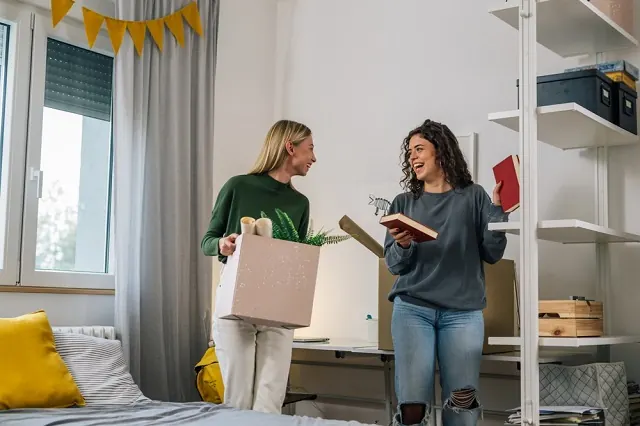
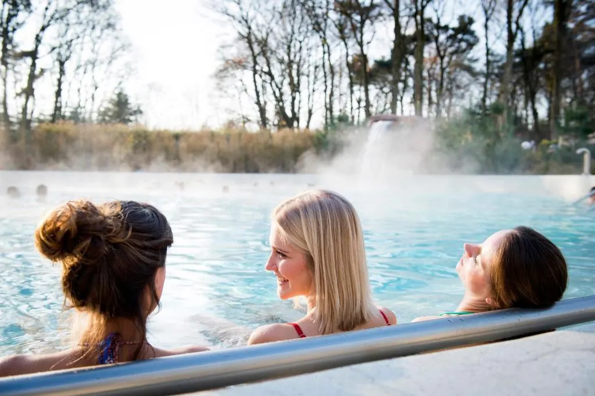
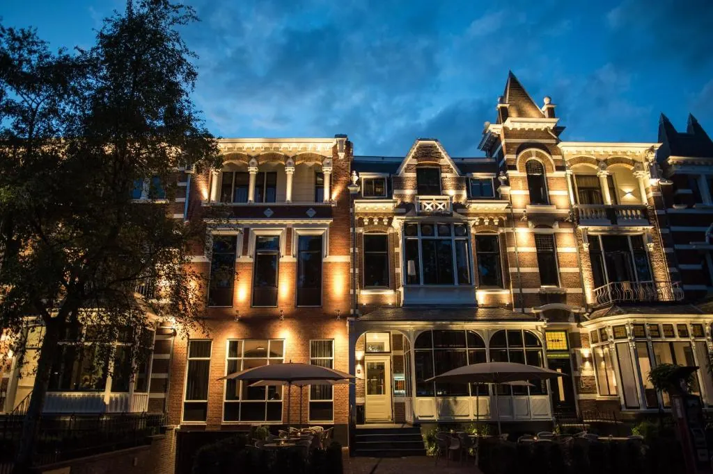
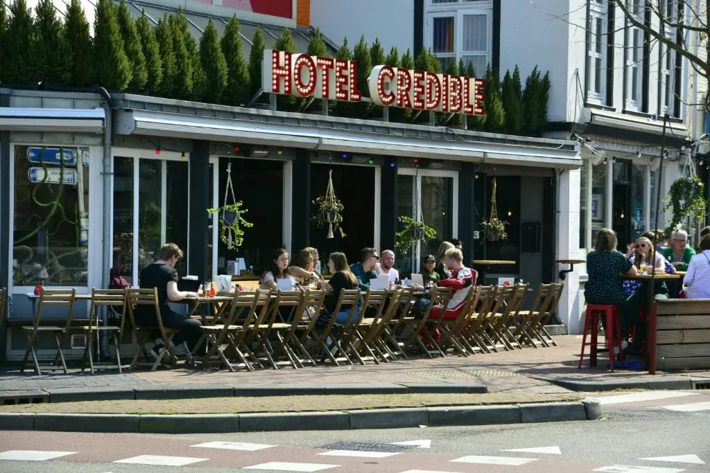
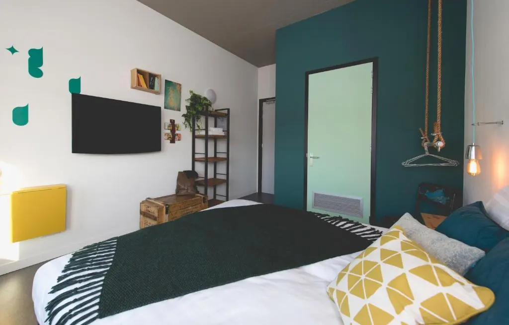
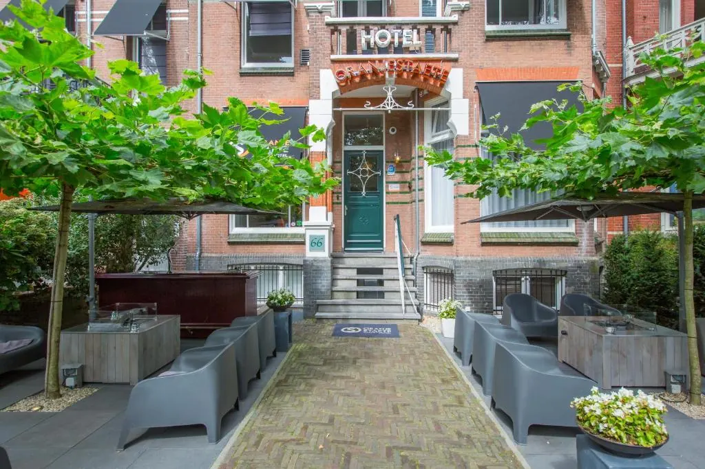

Wat Zijn de Mooiste Hotels in Nijmegen? Onze Top 5
Gepubliceerd op 17 januari 2023, bijgewerkt op 8 november 2023
Onderdeel van de gids Overnachten in Nijmegen

Nijmegen is een fantastische stad waar jij absoluut een keer geweest moet zijn. In de bruisende binnenstad van Nijmegen kun je heerlijk winkelen, bourgondisch genieten in diverse horecagelegenheden, en je laten verrassen door alle prachtige oude gebouwen die de stad rijk is. Kortom, in Nijmegen hoef jij je niet te vervelen. Het is dé ideale stedentrip bestemming binnen Nederland. Overweeg jij ook een weekendje te vertoeven in het prachtige Nijmegen? Dan ben je ongetwijfeld op zoek naar het beste hotel. Dat treft! Wij deden recentelijk namelijk onderzoek naar de mooiste hotels in Nijmegen.
Ben je op zoek naar een budget hotel? Dan is hotel Nimma net buiten het centrum van Nijmegen absoluut het overwegen waard. Ook hotel Oranjestaete is redelijk betaalbaar en bovendien dichtbij diverse bezienswaardigheden. Ben jij op zoek naar luxe? Dan is Sanadome Hote & Spa the place to be.
Het vinden van een prachtig hotel in Nijmegen kan vanwege het grote aanbod nog best een uitdaging zijn. Gelukkig zijn wij er om jou een helpende hand te bieden. In het onderstaande artikel bekijken we maar liefst 5 van de mooiste hotels in Nijmegen. Wij weten zeker dat het ideale hotel voor jou hier ook tussen zit. Laten we zowel de voor- als nadelen van ieder hotel eens nader onder de loep nemen.

Dit zijn de 5 mooiste hotels in Nijmegen
Het beste hotel ziet er voor iedereen anders uit. De ene gast is op zoek naar ongekende luxe, terwijl de andere gast juist kosten wenst te besparen door de goedkoopste hotelkamer te boeken. Ieders wensen zijn anders en hier passen dan ook verschillende hotels bij. Onderstaand bespreken we enkele mooie hotels in Nijmegen, ieder met hun eigen unieke kenmerken.
1. Sanadome Hotel & Spa Nijmegen
Het eerste hotel dat we graag onder een vergrootglas willen leggen is Sanadome Hotel & Spa te Nijmegen. Dit hotel is gevestigd in een rustige omgeving, maar toch dichtbij diverse populaire bezienswaardigheden. Het betreft een 4-sterrenhotel die gasten over het algemeen enorm goed beoordelen.
Zowel de goede locatie als de vele voorzieningen zijn populair onder de hotelgasten. Het hotel heeft enorm veel luxe te bieden. De gratis toegang tot het spacentrum met zowel zoet- als zoutwatermineraalbaden is hiervan slechts één voorbeeld.
In vergelijking met andere hotels in de regio is dit hotel niet goedkoop. Al deze luxe kennen immers ook een prijskaartje. Voor één nacht betaal je gemiddeld iets minder dan 200 euro. Dit hotel is dus geschikt voor mensen die graag investeren in een luxe verblijf terwijl ze al het moois ontdekken dat Nijmegen te bieden heeft.

2. Blue Hotel Nijmegen
Blue Hotel Nijmegen verdient zonder twijfel een plek in onze top 5. Het hotel is gevestigd in het centrum van Nijmegen, en zodoende zeer geschikt voor toeristen die de unieke binnenstad wensen te ontdekken. Het betreft een klein doch charmant boetiekhotel met 30 kamers.
Het prachtige 19e-eeuwse pand waarin het Blue Hotel gevestigd is, trekt absoluut veel bekijks. Het pand heeft veel authentieke details behouden terwijl er ook sprake is van modernisering. Het is als het ware het beste van twee werelden. Op de begane grond zijn er diverse gezellige horecagelegenheden te vinden.
De unieke sfeer binnen dit hotel is absoluut aantrekkelijk. Ook de elegante hotelkamers zijn op zich al een lust voor het oog. Kan jij wat authentieke oude architectuur wel waarderen? Dan is Blue Hotel Nijmegen wellicht jouw volgende bestemming.
Blue is geen budget hotel. Je betaalt iets meer dan 150 euro per nacht voor een sfeervolle kamer in dit bijzondere hotel.

3. Hotel Credible
Houd jij van gezelligheid? Dan is hotel Credible the place to be! De knusse sfeer in dit hotel is ontzettend gezellig. Zowel van binnen als van buiten maakt dit hotel een unieke indruk. Kleurrijk, artistiek, speels en beren gezellig, dat zijn de kernwoorden die wij graag zouden gebruiken bij het omschrijven van deze plek.
De kamers in hotel Credible zijn simpel doch stijlvol. Gasten zijn gecharmeerd van de minimalistische uitstraling en de schone kamers. Ga aan de bar zitten voor een speciaal biertje of kies ervoor één van de gezellige bordspelletjes te spelen. Ook het eten en de snacks zijn in dit hotel uitmuntend.
Hotel Credible is redelijk betaalbaar. Met een gemiddelde prijsklasse is het hotel toegankelijk voor een breed publiek. Iedereen is welkom in het gezellige hotel Credible.

4. Hotel Nimma
Hotel Nimma mag absoluut niet ontbreken in de lijst met mooiste hotels in Nijmegen. Het hotel is net iets buiten het centrum gevestigd, in een oud pand dat er aan de buitenkant niet heel spannend uitziet. Maar eenmaal binnen zal je zien dat het absoluut geen saai hotel is.
De inrichting van het hotel gebruikt veel industriële details in combinatie met een vleugje vintage. Het hotel heeft 27 kamers en ligt op loopafstand van het centrum van Nijmegen. Gasten beoordelen dit hotel enorm positief, en lijken vooral gecharmeerd te zijn van de optimale hygiëne.
In vergelijking met de andere hotels in deze lijst, is hotel Nimma absoluut een betaalbare optie. Heb jij binnenkort dus een stedentrip naar Nijmegen op de planning staan, maar heb je een beperkt budget? Vergeet dan niet om hotel Nimma in overweging te nemen.

5. Hotel Oranjestaete
Het laatste pareltje op onze lijst is Hotel Oranjestaete. Het betreft een supermodern hotel dat op steenworp afstand ligt van de meest populaire bezienswaardigheden in Nijmegen. Dit hotel is zeer geliefd bij reizigers die Nijmegen graag te voet ontdekken.
De beoordelingen van dit hotel liegen er niet om. Zowel de locatie, service als prijskwaliteit verhouding zijn zeer positief beoordeeld. We kunnen dus zonder twijfel spreken van een kwalitatief goed hotel.
De kamers van hotel Oranjestaete zijn van alle gemakken voorzien. De ideale plek om tot rust te komen na een lange dag wandelen in Nijmegen. Dit hotel ligt in een gemiddelde prijsklasse. Ben jij ook graag van alle gemakken voorzien tijdens jouw stedentrip in Nijmegen? Dan is Oranjestaete misschien wel het ideale hotel voor jou.

Hopelijk kan je aan de hand van onze 5 suggesties een keus maken waar je wilt overnachten in Nijmegen. Zoek je nog inspiratie om een hapje te eten in Nijmegen. Ben je meer geïnteresseerd om naar een café toe te gaan waar het één en al historie ademt, lees dan vooral dit artikel van ons.
Hotels in Nijmegen
Zin om te beginnen? In onze bedrijvengids vind je alle 18 hotels in Nijmegen, met openingstijden, kenmerken en een kaart.
Bekijk alle 18 hotels in Nijmegen
Heb je zelf een hotel? Laat je hier uitlichten.